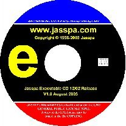

Latest JASSPA CD-ROM Download
Last Upload: 10th October 2006
Disc Images
| ISO9660 Disc Images |
ISO9660 CD-R Images of JASSPA MicroEmacs | Byte Size |
Last update yyyy-mm-dd |
|---|---|---|---|
|
|
A ISO CDROM image of all of the material on jasspa.com including full source, executables, packages, spelling dictionaries and documentation. CD labels are included on the CD. MicroEmacs or NanoEmacs may be run directly from the CD. Download suitable for Broadband. Hybrid ISO9660 Disc, UNIX Rock Ridge, Microsoft Joliet, Apple HFS README more information. |
Not Avail (70Mb) |
2005-05-30 |
|

Version 1.4
|
A ISO CDROM image containing executable versions of MicroEmacs and NanoEmacs that may be run directly from CD. This is a subset of the full image, source and macro archives (tar.gz) are included with CD-labels. This disc is an alternative to the full images above that supports all pre-built executables with a much smaller download size (excludes spelling, documentation, packages, icons). The disc contains enough information to perform a binary install on all supported platforms in addition to a source build. Download suitable for Dial-up. Hybrid ISO9660 Disc, UNIX Rock Ridge, Microsoft Joliet, Apple HFS. Where the disc is to be used with HP-UX then the jasspa-mecd-lexe-20060909.zip image should be used. README more information. |
Not Avail (13Mb) |
2005-05-24 |
|
Version 1.4
|
A ISO CDROM image containing executable versions of MicroEmacs and NanoEmacs that may be run directly from CD. The disc is identical to jasspa-mecd-exec-20060909.zip in content, but is constructed with Untranslated filenames to allow direct mounting of the CD-ROM under HP-UX. The disc does invalidate the ISO9660 standards and will not work with MS-DOS because of the long names, the disc is still valid with other UNIX and Microsoft Windows operating systems. Hybrid non-standard ISO9660 Disc, UNIX Rock Ridge, Microsoft Joliet, Apple HFS with Untranslated filenames. This disc is more suitable for HP-UX systems and may be mounted directly without Rock Ridge extensions under HP-UX. README more information. |
Not Avail (13Mb) |
2005-05-24 |
|
a4_neto.pdf letter_neto.pdf a4_pressit.pdf letter_pressit.pdf |
CD Labels, also included within the ISO image. | - | 2006-09-09 |
![[release_20060909/jasspa-mecd-full-20060909.zip]](images/cdfull.jpg)
NO WARRANTY
This program is licensed free of charge, there is no warranty for the program, to the extent permitted by applicable law. Except when otherwise stated in writing the copyright holders and/or other parties provide the program "as is" without warranty of any kind, either expressed or implied, including, but not limited to, the implied warranties of merchantability and fitness for a particular purpose. The entire risk as to the quality and performance of the program is with you. Should the program prove defective, you assume the cost of all necessary servicing, repair or correction.
In no event unless required by applicable law or agreed to in writing will any copyright holder, or any other party who may modify and/or redistribute the program as permitted above, be liable to you for damages, including any general, special, incidental or consequential damages arising out of the use or inability to use the program (including but not limited to loss of data or data being rendered inaccurate or losses sustained by you or third parties or a failure of the program to operate with any other programs), even if such holder or other party has been advised of the possibility of such damages.
By downloading any material from this site you agree to these conditions.